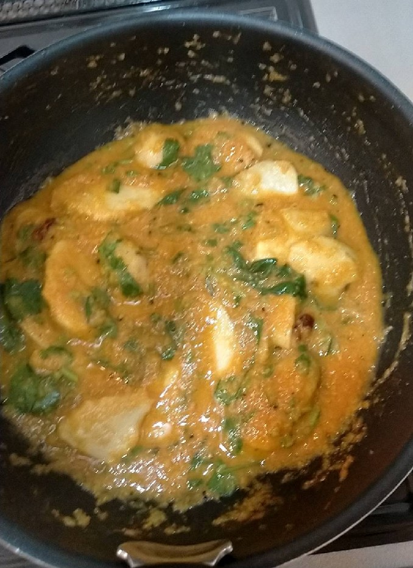

Arvi-ka-salan

-
Arvi-ka-salan~Taro curry
-
It is a vegetarian dish with lots of spices. Enjoy.
- 250g taro
- 2 onions
- 1 tomato
- 2 tablespoons oil
- 1 small tablespoon turmeric powder
- 1 small tablespoon chilli powder
- 1 stick chinamon
- 1 cup water
- 1 teaspoon cuminpowder
- 1 dry red chilli
- 1 small tablespoon garam masala
- 2 cloves garlic
- 1 tablespoon ginger
- 1 teaspoon lemon juice
- 1 bunch coriander
Prework
- Peel the taro and cut them into slices.
- Grate the garlic and ginger.
- Cut the coriander.
Steps
- Add 2 tablespoons of oil into a deep fry pan. Fry the taro until they get golden brown and take them out in another separate plate.
- Add sliced onions in the same pan, same oil. Add garlic and ginger paste after onions turn brown. Stir well and make sure the ginger and garlic paste are cooked.
- When the whole mixture gets brown, add tomato and some extra water as necessary.
- Cook the tomato for a while until they no longer retain their shape. Add 1 teaspoon of red chilli powder, turmeric powder and salt (to taste) and chopped dry red chilli.
- Add taros. Mix. Add 100 ml of water. Put on the lid and let it cook for 5 minutes on low~midium flame.
- Add 1 teaspoon of coriander powder, 2~3 pinch of garammasala and black pepper.
- Add 1 teaspoon of lemon juice and chopped coriander and mix.